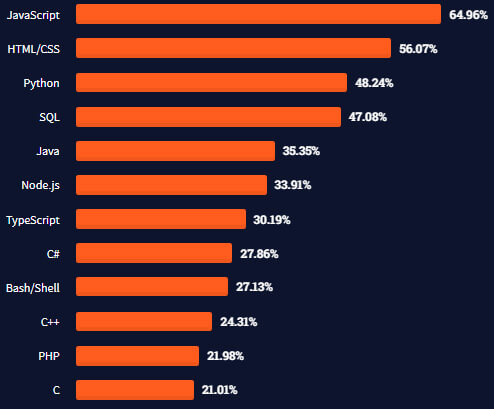

PYTHON
Introduction
Conçu par Guido van Rossum, Python est un langage de programmation qui a été publié première fois en 1991 et qui a gagné du terrain dans
l'industrie au cours des cinq dernières années. En mettant l'accent sur la lisibilité du code , ce langage open source est convivial et facile à
utiliser.Python est connu pour sa syntaxe simple et sa longueur de code courte. Sa documentation et ses méthodes d'emplois complète disponible
sur son utilisation le rend facile à apprendre. De plus, Python est également extrêmement polyvalent et bien conçu. Si cela ne suffisait pas,
Python est un langage indépendant de la plate-forme, ce qui signifie que les logiciels créés à l'aide de Python peuvent être utilisés sur une
grande variété de systèmes d'exploitation sans avoir besoin d'un interpréteur. Tout cela signifie que les programmeurs peuvent passer une grande
partie du temps qu'ils consacrent habituellement à faire fonctionner le code ou à comprendre comment cela fonctionne pour relever les défis les
plus significatifs de leur projet de développement particulier.
Mais Python ne se contente pas de faciliter le processus d'apprentissage,sa lisibilité facilite également la communication entre les programmeurs
travaillant sur le même projet.Cela signifie que si un autre programmeur travaille sur des ajouts ultérieurs au code, il ne devrait avoir aucun
problème à comprendre et à travailler avec le code d'origine.
Python est-il devenu populaire?
Comme en témoigne le classement de l'Institute of Electrical and Electronics Engineers (IEEE) , Python s'est en fait hissé au sommet des classements,
se classant au premier rang parmi les langages de programmation. Sa popularité ne se limite pas seulement à l'industrie informatique, car Python est
également largement utilisé dans les milieux universitaires. En plus de celles mentionnées dans cet article, certaines des raisons citées pour sa
popularité sont le fait que Python est fiable, accessible et très productif.
Mais il ne s'agit pas seulement de suivre le troupeau, la popularité de Python signifie qu'il a une communauté importante et extrêmement active, qui,
heureusement pour nous, a aidé à construire un nombre considérable de bibliothèques et de frameworks spécialisés
fournissant des outils supplémentaires avec lesquels travailler.
python est-il devenu le langage back-end à la croissance rapide?
se classait au 6e rang en popularité avec un peu moins de 22 % des personnes interrogées ayant déclaré l'utiliser. En 2017, il s'était finalement hissé à
la 5ème place et, en 2020,il a atteint la 3ème place parmi les langages les plus appréciés des utilisateurs de Stack Overflow. C'est aussi l'outil que la
plupart des développeurs disent vouloir apprendre. Cela se traduit à nouveau par des ressources plus disponibles pour travailler avec ce langage de
programmation particulier. C'est pourquoi overflow l'a surnomé le langage de programmation majeure à la croissance la plus rapide à plus d'une occasion.

Quelles sont les différents frameworks de Python?
quelques-unes parmi lesquelles vous pouvez choisir en fonction des besoins de votre application Web :
- Django: Django est un framework Web Python open source populaire construit par des développeurs expérimentés. Il vise à utiliser l'automatisation
dans la mesure du possible pour accélérer le développement Web et permettre aux développeurs de logiciels de se concentrer sur le travail important.
Il est rapide, sécurisé et polyvalent.
- Flacon: Flask est un framework Web Python qui fournit divers outils pour développer des applications Web. Flask est considéré comme un micro-framework,
ce qui signifie qu'il n'a pratiquement aucune dépendance vis-à-vis des bibliothèques externes. Ce cadre est léger, flexible et facile à apprendre.
- Bouteille: Comme autre micro framework web, Bottle est léger, facile à intégrer et à personnaliser, et dépend uniquement de la bibliothèque standard
Python. Bottle est idéal pour prototyper des idées et créer des applications Web simples.
- Tornade: Tornado n'est pas seulement un framework d'application Web, mais aussi une bibliothèque asynchrone. Il est idéal pour développer de longs
sondages et Web Sockets et a été surnommé un terrain d'entente entre Django et Flask.
- Cerise Py: Cherry Py est un framework Web minimaliste et orienté objet qui fait des merveilles pour les applications Web. Il est rapide, stable et
polyvalent.
- Câlin: Étreinte se présente comme un cadre clair, évident et simple pour le développement Web. Il a été conçu dans un souci de performance et comprend
une gestion de version intégrée ainsi qu'une documentation automatique.
Résumé
Bien qu'il existe de nombreux langages backend, dont beaucoup sont très populaires, productifs et utiles, Python nous a définitivement conquis. Cela rend notre
travail quotidien plus facile et plus agréable, nous permettant de nous concentrer sur les vrais problèmes et nous aidant à fournir des produits exceptionnels à
nos clients. Python travaille en permanence sur de nouvelles versions,et la dernière en date (3.9.0) est sortie le 5 octobre 2020.
Comment utiliser Python
- variables
Pour déclarer une variable il faut 3 éléments:
-Son nom
-Son type
-Sa valeur
Ex:Cahier="prestige"
Cahier est son nom,prestige est sa valeur et string(chaine de caractère) est son type
- comment afficher le résultat
Pour afficher le résultat en python il faut utiliser pratiquement
Ex:print("hello my family")
NB:>>> indique ou écrire le code
- Les commentaires
Pour écrire un commentaire il faut # et python affichera le reste de la ligne sous forme de commentaire
Ex:
- Les différents types de données
Un type de données est une façon de classer différents types de variables
.Les entiers(integers)(les nombres entiers)
.Les virgules flottantes(float)(Les nombres décimaux)
.Les chaînes de caractère(string)(les chaine de caractère)
.Les booléeens(vrai ou faux)
EXERCICE
Ecrire la condition d'un feu tricolore.